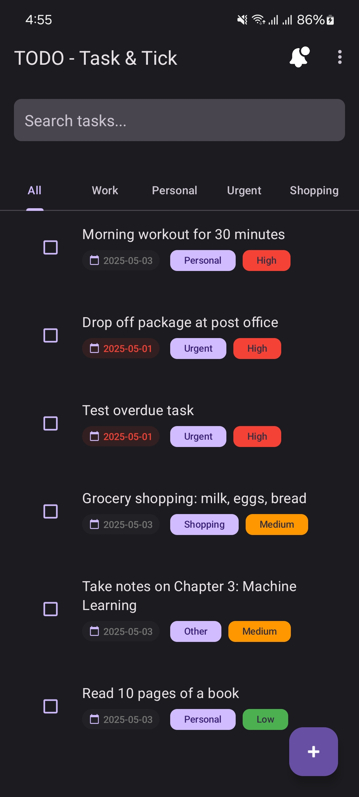
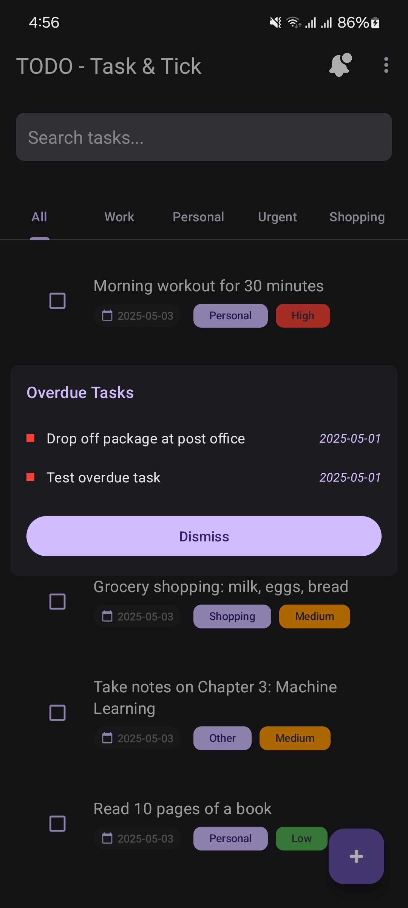
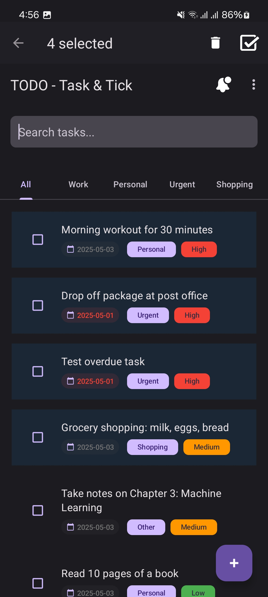
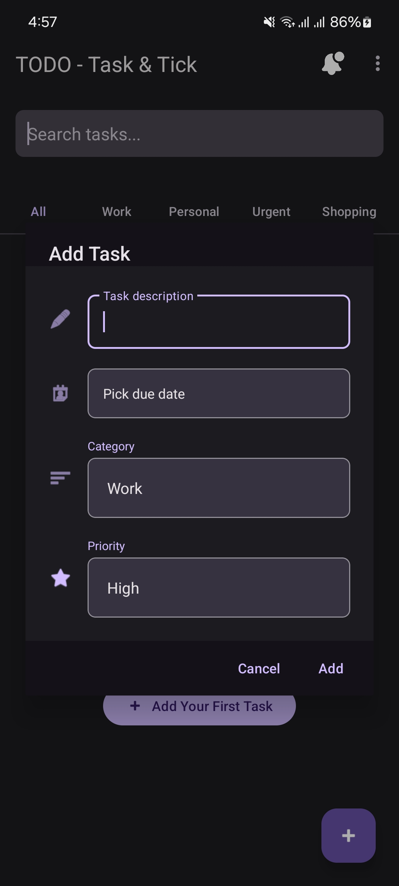
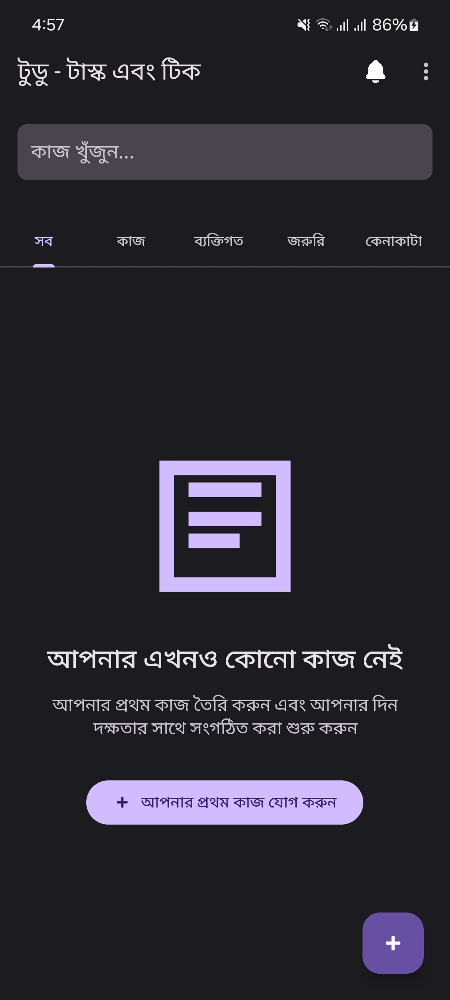
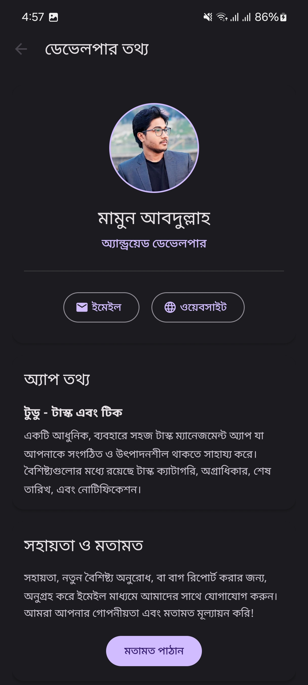
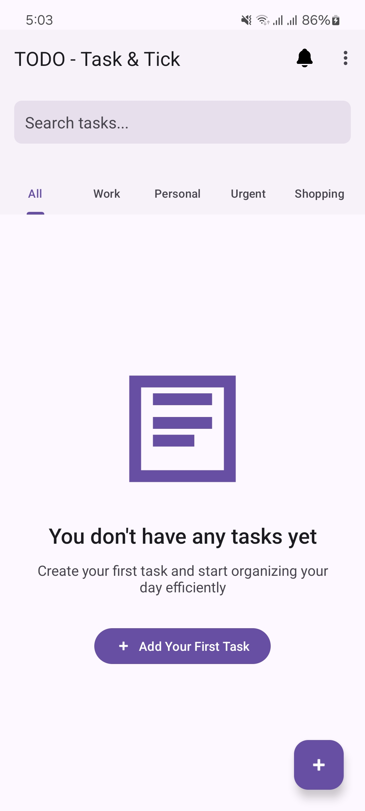
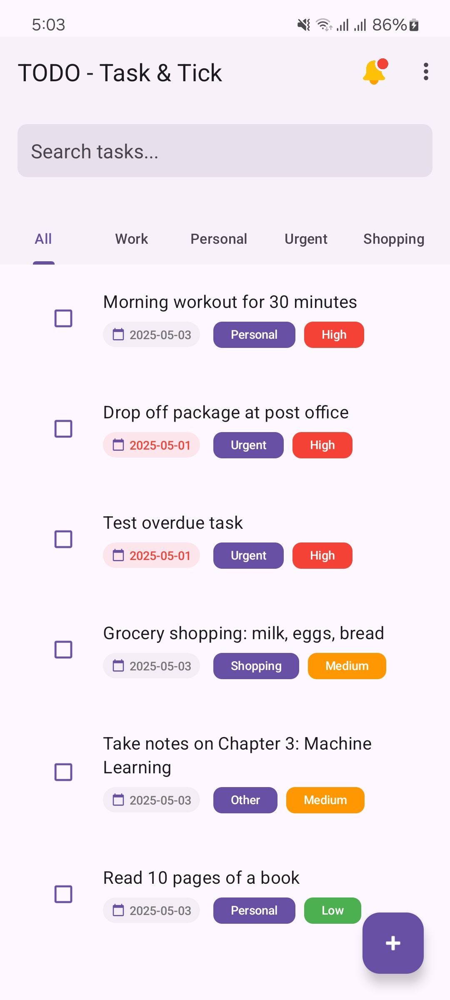

Create, edit, and delete tasks with ease. Keep track of all your to-dos in one place.
Organize tasks by categories and assign priority levels to focus on what matters most.
Set deadlines for your tasks and get reminders for overdue items.
Filter tasks by category, priority, or completion status to find exactly what you need.
Available in English and Bengali to cater to diverse user needs.
Full support for both light and dark themes to reduce eye strain and save battery.








This app is open source and available on GitHub.